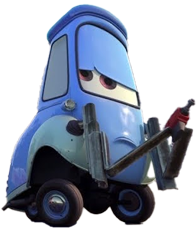
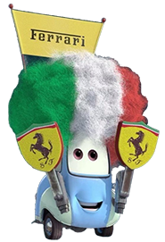

GUIDO
Sobre Mi
Ciao! Mi nombre es Guido y me considero alguien carismático que siempre está dispuesto a ayudar a sus amigos. Nací y crecí en Italia, y aunque el italiano es mi lengua madre puedo hablar y entender español con fluidez. Trabajo junto a mi mejor amigo Luigi en Casa Della Tires, un modesto lugar en Radiador Springs donde me dedico a cambiar los neumáticos de los autos que visitan el pueblo. En temporada de carreras formo parte del equipo de pits del Rayo McQueen. Además de esto soy el honorario bartender del célebre Wheel Well Motel.

Logros
Co-fundador de Casa Della Tires
Miembro crucial del equipo de pits del Rayo McQueen
Bartender del Wheel Well Motel
Parada de pits más rápida del mundo
Conocido personal de más de un Ferrari
Mejor amigo de Luigi
Bilingüe
